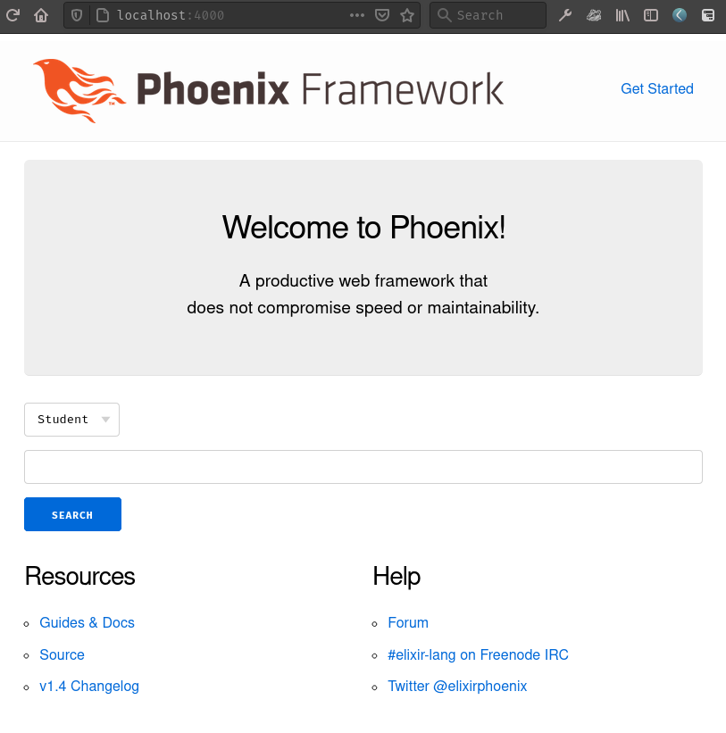
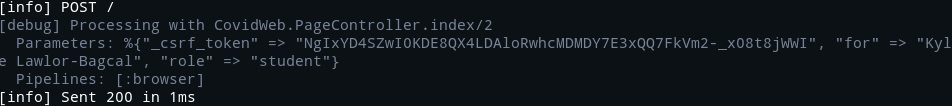

I have been toying around with Phoenix for a short time, and I wanted to write up some notes for how I learned the basics of creating a form and POST-ing data to a controller. Phoenix is a slick tool for creating web applications, and I've only just scratched the surface. It equips you with a surprising amount of functionality out of the box. But I will not understate that for someone relatively new to Elixir, sorting through how to do that is intimidating/challenging. Elixir still reads like a bit of a foreign language to me.
Anyways let's dive into my concise summary of how to create a really dumb form and how we can see it working on the back-end. Here are the steps:
Here's the install page and here's the getting started guide. Phoenix is not a micro-framework. This is probably part of why I've had a hard time understanding things. I'm used to Flask. But it's pretty awesome. I won't write much more about this step, just follow the guides.
POST requestIn lib/hello_web/router.ex:
scope "/", HelloWeb do
pipe_through :browser
get "/", PageController, :index
post "/", PageController, :index
end
lib/hello_web/templates/page/index.html.eex:<section class="row">
<article class="column">
<%= form_for @conn, Routes.page_path(@conn, :index), fn f -> %>
<%= select f, :role, ["Student": "student", "Faculty": "faculty", "Staff": "staff"] %>
<%= text_input f, :for %>
<%= submit "Search" %>
<% end %>
</article>
</section>
Kick off a terminal session and run mix phx.server. Navigating over the localhost:4000 we can see it, here's a screenshot that shows how the form looks:

Once we've actually submitted the form, we get some really helpful debugging output, by default, in the terminal where mix phx.server is running:

It includes the data that we POSTed, and it includes a _csrf_token (which by the way Phoenix also by default validates all forms with CSRF protection).
Phoenix and Elixir are quite different than what I'm used but it forces me to think about things somewhat differently. Given that the tools are so powerful this early on in my use of them, I can only imagine what else you can do with them. I hope this very brief, and surface-level tour of forms in Phoenix could be helpful for someone.
My next post will be a short write up of how to make use of IEx.pry for debugging in various places within a Phoenix app.